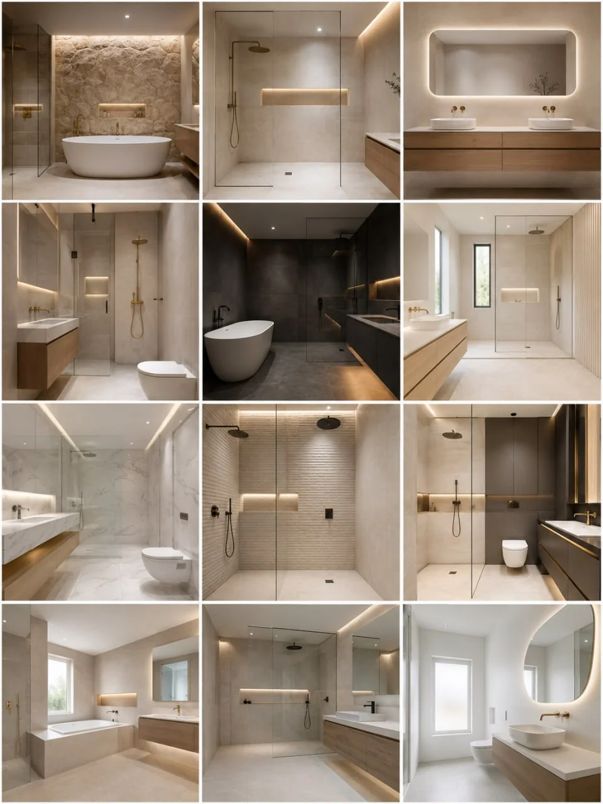
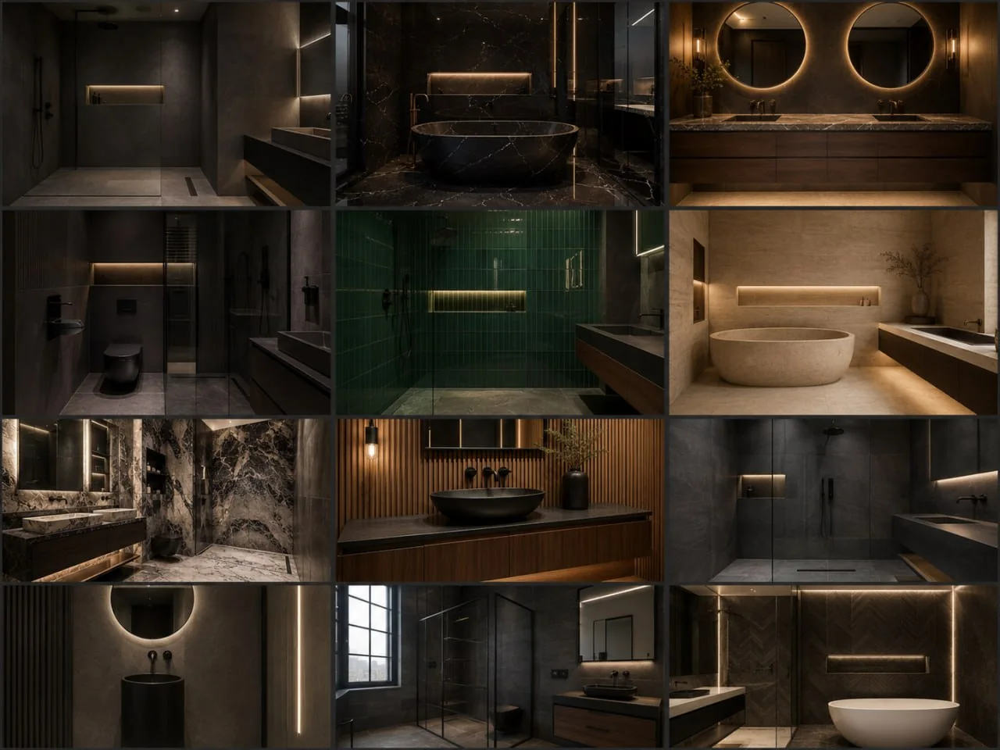

01 · LIGHT & CONTEMPORARY
BATHROOM FITTING WEBSITE CONCEPT · PRIVATE REVIEW
Let the room
do the talking.
A light, image-led website concept for t J r Bathrooms Ltd: make bathroom directions easy to explore, answer approved questions clearly, then provide a controlled route to owner-approved contact.
- AI-illustrative imagery
- Manual assistant
- Owner-controlled launch

BATHROOM INSPIRATION
Three visual directions. One clear private-review boundary.
Use the visual direction that feels right, then replace it with owner-approved room, project, supplier or showroom imagery before any official launch.

02 · DARK & ARCHITECTURAL
Marble, timber & boutique-spa detail

03 · MIXED PREMIUM COLLECTION
Light and dark ideas across room types
These are AI-generated visual directions only. They do not represent t J r Bathrooms Ltd's completed projects, customer homes, current range or materials.
PROJECT-TYPE NAVIGATION
A practical way for visitors to find the kind of room they are considering.
These are example website categories for owner review, not a claim that every option is currently offered.
A SIMPLE PROJECT JOURNEY
Visitors should know what happens next before they make contact.
A real launch can turn this into the business's owner-approved consultation, survey, design, quotation and installation process.
- 01Start with the room and what the visitor wants to change.
- 02Confirm the right project route, scope and timing with the business.
- 03Provide the owner-approved enquiry, survey or quotation route.
- 04Show only verified project, material and aftercare information.
MINIMUM USEFUL FUNCTION
More than a brochure. Still controlled.
The assistant can guide visitors through approved information and clearly defer anything that has not been confirmed. It does not invent prices, availability, timeframes or project claims.
Visual ideas
Explore room styles without being presented as a product catalogue.
Approved answers
Give visitors the information the owner has decided is safe to publish.
Safe next step
Enable a quote, survey, callback or photo-upload route only after owner approval.
PRIVATE-REVIEW FAQ
Answer the questions a proper launch needs to cover.
Are the bathrooms shown here completed projects by this business?
No. They are AI-generated illustrative directions used for this private concept only.
Can a visitor get a quote, callback or survey from this preview?
Not yet. Operational enquiry routes remain disabled until the owner confirms the preferred process.
Will a live site include prices, reviews, brands or warranties?
Only if the owner supplies and approves accurate information, sources and wording.
What would be added before official launch?
Real project images, actual service scope, verified reviews, service areas, contact route and approved assistant knowledge.
OWNER-RECOGNITION DETAILS · SOURCE WORKBOOK
t J r Bathrooms Ltd
This preview uses the recognised business identity and bathroom-fitter category only. It is not an official business website or live lead service.
- Category
- Bathroom fitters
- Address
- 662–666 Romford Road, Manor Park, London, E12 5AQ
- Telephone
- 020 8553 2658
- tjrbathrooms@btconnect.com